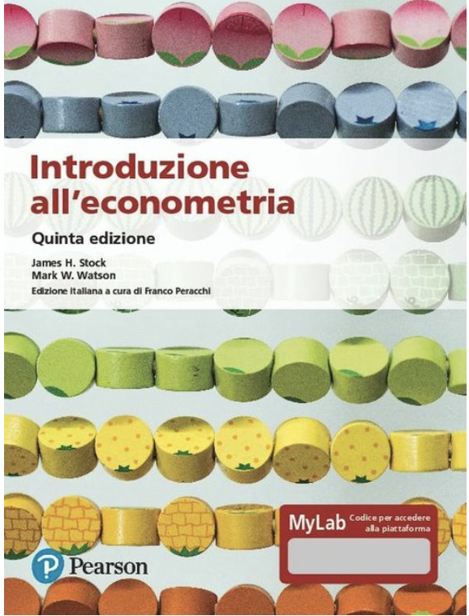

Syllabus
Docente
- Prof. Giuseppe Ragusa
- Sapienza, Università di Roma
- Dipartimento di Economia e Diritto
- Prof. Giuseppe Ragusa
- giuseppe.ragusa@uniroma1.it
- Ricevimento
Dettagli del corso
- Lunedì (L) e Martedì (M)
- 19 febbraio, 2024 - 1 giugno 2024
- (L) 10:00–12:00 (M) 14:00-16:00
- (L) Aula 10 (M) Aula 8b
Descrizione del corso
Econometria (1018133) offre agli studenti un’introduzione pratica all’econometria, strumento fondamentale per comprendere e analizzare l’economia da un punto di vista empirico. Attraverso un approccio equilibrato tra teoria e pratica, gli studenti esploreranno i concetti fondamentali e gli strumenti empirici necessari per comprendere le sfide relative all’impiego di tecniche quantitative in microeconomia, macroeconomia e finanza.
L’enfasi è sulla comprensione intuitiva e non sulle formalità matematiche questo corso ti fornirà le competenze necessarie per affrontare sfide analitiche complesse con sicurezza e competenza.
Obiettivi del corso
Alla conclusione del corso, gli studenti saranno in grado di condurre analisi empiriche in modo indipendente e interpretarne i risultati, valutando attentamente l’adeguatezza delle assunzioni necessarie per garantire la corretta interpretazione dei risultati.
In particolare, gli studenti saranno in grado di:
- Comprendere la logica e la filosofia dei modelli econometrici presentati, valutando la loro capacità di cogliere relazioni causali o di fornire predizioni di qualità.
- Valutare criticamente le assunzioni fondamentali sottostanti ai modelli econometrici, analizzandone l’impatto sulla validità dei risultati.
- Utilizzare rigorose misure statistiche per valutare la qualità delle predizioni generate dai modelli econometrici.
- Applicare efficacemente il software R per manipolare dati, produrre visualizzazioni informative e stimare i parametri dei modelli econometrici utilizzando dati reali, sviluppando così competenze pratiche nel campo dell’analisi dei dati e della modellistica economica.
Libro di testo

Il libro di testo utilizzato in questo corso è:
Stock, J. H. e Watson, M.W: Introduzione all’econometria, Pearson Italia, 2020. ISBN: 8891906190.
Durante il corso, gli studenti avranno accesso a slides didattiche che forniranno una guida dettagliata attraverso i concetti e gli argomenti trattati. Queste risorse supplementari saranno fondamentali per consolidare la comprensione dei materiali di studio e facilitare il processo di apprendimento.
Software

Orari di ricevimento
Gli orari di ricevimento sono:
| Giorno | Orario |
|---|---|
| Lunedì | 9:00-10:00 |
| Martedì | 9:00-10:00 |
E’ obbligatorio prenotare un appuntamento a questo link.
Modalità di valutazione
L’esame di Econometria comprende due fasi: una prova scritta e una prova orale, entrambe obbligatorie.
La prova scritta valuterà la capacità degli studenti di comprendere e interpretare le stime dei modelli econometrici introdotti durante il corso e di applicarli in contesti specifici.
La prova orale è volta ad accertare in maniera piu’ articolata le conoscenza acquisite nel corso.
L’ammissione alla prova orale è garantita agli studenti che abbiano superato con sufficienza la prova scritta.